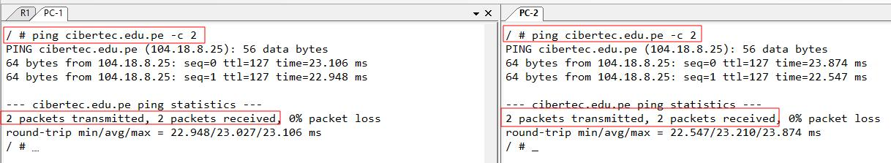
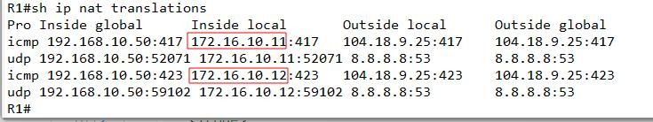

Haremos una topología básica con un router Cisco, en la que una interface está conectada a la red local 172.16.10.0/24 y a su vez por va a asignar direcciones dinámicas a los tres clientes. Por el otro lado la interface g0/0 estará conectado a mi interface virtual, que simulará una salida a internet. Para eso se configurará NAT en el router. Veremos que los clientes luego podrán tener acceso a internet.

Primero conectaremos los dispositivos tal como se muestra en la figura. En este caso estamos haciendo uso del software GNS3, en donde los elementos que se ven son un router, switch, 3 máquinas clientes basados en Linux (son contenedores disponibles en la página de GNS3, muy útiles a la hora de hacer pruebas rápidas sin necesitar de estar integrando máquinas virtuales ya que consumen mucha RAM y CPU.)
Ahora pasamos a configurar el router. Entramos en la consola, para mi caso estoy usando SUPERPUTTY, que me permite abrir varias sesiones al mismo tiempo de manera ilimitada. Como se ve en la figura también se muestra las terminales de las pc's clientes.

Ahora pasamos a las configuraciones básicas como el nombre del dispositivo, la asignación de las direcciones IP de la interface correspondiente.
Router(config)#hostname R1
R1(config)#interface g0/1
R1(config-if)#description Conectado a Red Lan
R1(config-if)#ip address 172.16.10.1 255.255.255.0
R1(config-if)#no shutdown
R1(config-if)#interface g0/0
R1(config-if)#description Conectado a Internet
R1(config-if)#ip address 192.168.10.50 255.255.255.0
R1(config-if)#no shutdown
Ahora pasamos a configurar el servicio DHCP en la interface g0/1, antes de eso excluimos las 10 primeras direcciones. Es decir los clientes empezarán a tener IP a partir de 172.16.10.11. se coloca un nombre al pool de direcciones, en este caso le he llamado LAN_NET, y los parámetros de red, gateway y los servidores DNS de google.
R1(config)#ip dhcp excluded-address 172.16.10.1 172.16.10.10
R1(config)#ip dhcp pool LAN_NET
R1(dhcp-config)#network 172.16.10.0 255.255.255.0
R1(dhcp-config)#default-router 172.16.10.1
R1(dhcp-config)#dns-server 8.8.8.8
Si vemos en la configuración del adaptador de red del cliente PC1 se muestra que está configurado para DHCP. Luego ejecutamos el comando ip add y vemos que ya tiene asignada la IP gracias al router R1.

Mostrando la IP de PC2:
Mostrando las IP's alquiladas a los clientes en el Router con el comando 'show ip dhcp binding'.
Ahora pasaremos a configurar NAT en el router. Primero crearemos el ACL de tipo estándar identificando la subred interna con el nombre de LAN_TO_NET, con su respectivo wildcard.
R1(config)#ip access-list standard LAN_TO_NET
R1(config-std-nacl)#permit 172.16.10.0 0.0.0.255
R1(config-std-nacl)#exit
Ahora asociamos la lista de control de acceso a NAT, en este caso se va a tratar de un NAT overload. es decir las direcciones se van a traducir a la interface g0/0. Los puertos de origen van a variar por cada cliente cuando quieran comunicarse con algún servidor de internet. Luego de eso ejecutamos el comando que identifica la interface si es NAT salida o entrada. En este caso como la interface g0/0 está conectando a internet se le especifica outside y la interface interna inside.
R1(config)#ip nat inside source list LAN_TO_NET interface g0/0 overload
R1(config)#int g0/0
R1(config-if)#ip nat outside
R1(config-if)#int g0/1
R1(config-if)#ip nat inside
R1(config-if)#exit
Ahora antes de probar conectividad a internet, no nos olvidemos de algo, la ruta estática predeterminada en el router. En este caso la IP del siguiente salto es la IP de mi adaptador virtual VMWare que es 192.168.10.254. Añadimos dos comandos más al router para que haga consultas DNS, y como servidor DNS estamos poniendo a Google.
R1(config)#ip route 0.0.0.0 0.0.0.0 192.168.10.254
R1(config)#ip domain-lookup
R1(config)#ip name-server 8.8.8.8
R1(config)#end
Probamos conectividad a internet desde el router haciendo ping a google y cibertec. Y luego realizamos ping desde las máquinas clientes. En las figuras se muestra que hay conectividad exitosa a internet.
Podemos visualizar las traducciones de las IP's de los clientes a la IP de la interface externa del router con el comando 'show ip nat translations'. Recordemos que las IP de tipo inside local son las que se van a traducir, que normalmente es la red interna. La inside global por lo general es la IP pública. Podría ser un pool, en este caso solo se ha configurado para que todas las IP's se traduzcan a la IP de la interface de salida. Lo que identifica a cada una en este caso sería por el puerto de origen.
